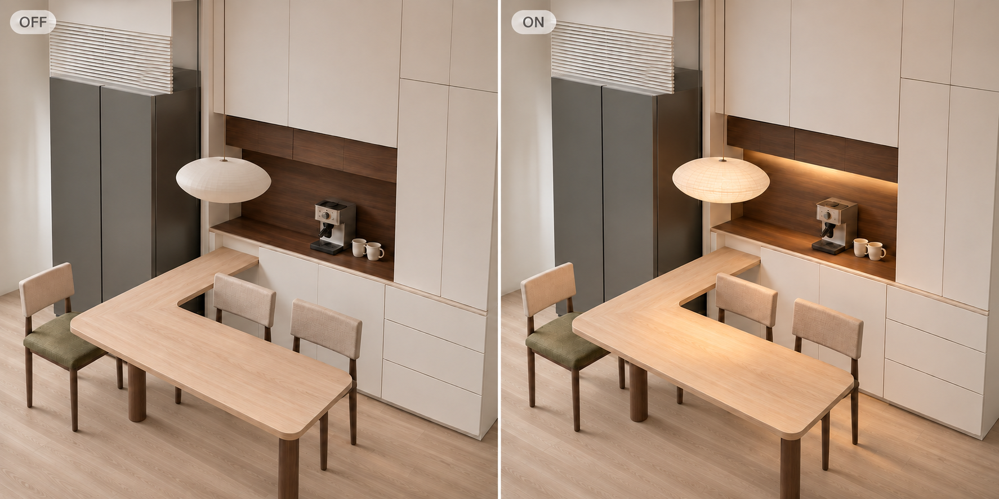
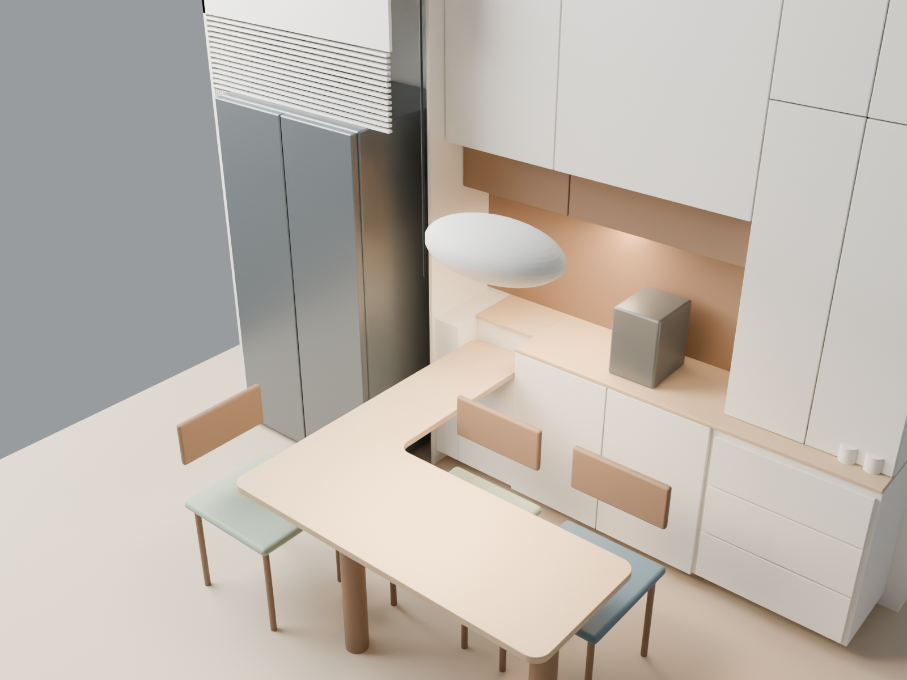

已被2026-11-06的新要求更新：柜面齐平冰箱、L内侧取物、椅子全在外端；请看独立08最新方案。下方07椅位及832净距只作历史。
历史独立方案07 · 2026-11-05 · 三常用一备用继续，内侧椅位已被08覆盖
三把常用，第四把备用
业主已确认优先保留通道。日常保留转角端一把、长边内侧两把；外侧第四把作为备用，平时另行收起。餐边柜实门、L形轮廓和现有对侧柜继续沿用。主模型仍为v19，未融合，未启动v20。
默认外观：三把常用椅

左人工灯全关，右全开，日光保留。原四椅图只作历史；本图默认不摆外侧备用椅。内置imagegen仅去掉该椅与其阴影，保留既有L形及材质。
通道与备用椅

- 日常外侧家具净距约832mm；L形自由端到餐厨门边界仍约622.5，门前转弯未因减少一把椅子而扩大。
- 来客启用第四把时，外侧家具净距约462，额外拉椅250后约212；需临时让行，用毕收回，不能把这个位置当作常摆。
- 备用椅优先研究可折叠或可叠放的款式，具体款式和收纳位置尚未选择。没有假设它能塞进餐边柜，也没有在入户通道另画一个存放点。
- 独立Blender默认显示三把；备用椅保留在单独隐藏集合。集合中的原坐标只记录来客启用位置，不是实际收纳位置。
- 三套外观A/B/C及精确尺寸尚未最终定案；本次只确认座位模式。尺寸为模型暂拟，冰箱开门、门净开口、真实椅型与人的进出动作仍需核对。
文件与来源
三常用一备用独立模型 · 参数与确认记录 · 模型保存重开核对 · 实际出图提示词
默认三椅的实体关系参考

主模型v19及28件现有家具保持。概念图片不作为实测或动线验收依据；尺寸与已知限制见参数和比例平面。